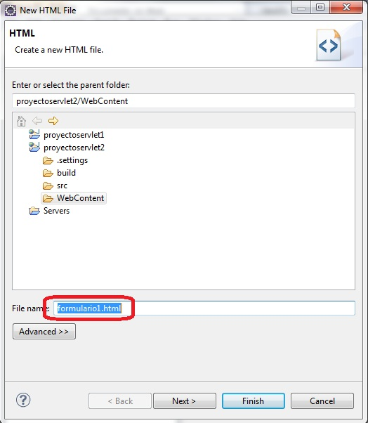
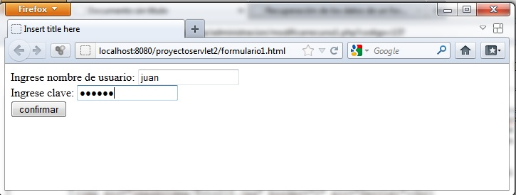
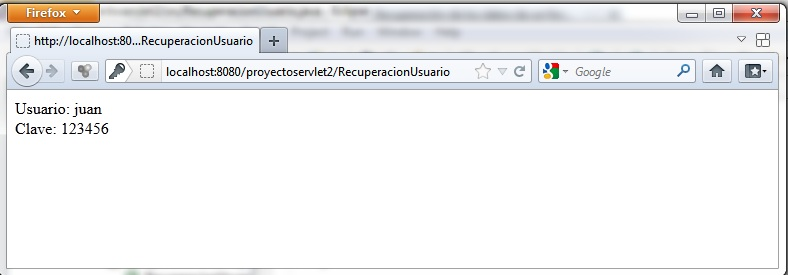

- Recuperación de los datos de un formulario HTML en un servlet |
Veremos ahora que un servlet puede recibir datos de un formualrio HTML.
Implementaremos un formulario HTML que solicite el ingrese del nombre y clave de un usuario y posteriormente recuperaremos los dos datos en un servlet y los mostraremos en otra página generada por el servlet.
Primero crearemos un proyecto llamado proyectoservlet2.
Para crear el archivo html con el formulario presionamos el botón derecho del mouse sobre la carpeta WebContent:
En el diálogo siguiente especificamos el nombre del archivo html, en nuestro caso lo llamaremos formulario1.html:
Codificamos la página html con el formulario web que solicita el ingreso del nombre de usuario y su clave:
<!DOCTYPE html PUBLIC "-//W3C//DTD HTML 4.01 Transitional//EN" "http://www.w3.org/TR/html4/loose.dtd"> <html> <head> <meta http-equiv="Content-Type" content="text/html; charset=ISO-8859-1"> <title>Insert title here</title> </head> <body> <form method="post" action="RecuperacionUsuario"> Ingrese nombre de usuario: <input type="text" name="usuario" size="20"><br> Ingrese clave: <input type="password" name="clave" size="20"><br> <input type="submit" value="confirmar"> </form> </body> </html>
Lo más importante cuando creamos el formulario web es la especificación de la propiedad action de la marca form con el nombre el servlet que recuperará los datos del formulario:
<form method="post" action="RecuperacionUsuario">
Ahora creamos el servlet que como vemos deberá llamarse "RecuperacionUsuario". El código fuente del servlet es el siguiente:
import java.io.IOException;
import java.io.PrintWriter;
import javax.servlet.ServletException;
import javax.servlet.annotation.WebServlet;
import javax.servlet.http.HttpServlet;
import javax.servlet.http.HttpServletRequest;
import javax.servlet.http.HttpServletResponse;
/**
* Servlet implementation class RecuperacionUsuario
*/
@WebServlet("/RecuperacionUsuario")
public class RecuperacionUsuario extends HttpServlet {
private static final long serialVersionUID = 1L;
/**
* @see HttpServlet#HttpServlet()
*/
public RecuperacionUsuario() {
super();
// TODO Auto-generated constructor stub
}
/**
* @see HttpServlet#doGet(HttpServletRequest request, HttpServletResponse response)
*/
protected void doGet(HttpServletRequest request, HttpServletResponse response) throws ServletException, IOException {
// TODO Auto-generated method stub
}
/**
* @see HttpServlet#doPost(HttpServletRequest request, HttpServletResponse response)
*/
protected void doPost(HttpServletRequest request, HttpServletResponse response) throws ServletException, IOException {
// TODO Auto-generated method stub
PrintWriter out = response.getWriter();
out.println("<html>");
out.println("<head></head>");
out.println("<body>");
out.println("Usuario:");
String usu=request.getParameter("usuario");
out.println(usu);
out.println("<br>");
out.println("Clave:");
String cla=request.getParameter("clave");
out.println(cla);
out.println("</body>");
out.println("</html>");
}
}
Como podemos ver en el código fuente de la clase RecuperacionUsuario debemos implementar todo el código en el método doPost, ya que este se ejecuta cuando se tiene un formulario HTML y se especificó en el HTML en la propiedad method el valor post:
<form method="post" action="RecuperacionUsuario">
Para recuperar los datos de los controles text y password del formulario HTML el objeto request de la clase HttpServletRequest dispone de un método llamado getParamenter que le indicamos el nombre del control a recuperar:
String usu=request.getParameter("usuario");
Luego de recuperarlo procedemos a mostrarlo dentro de la página generada:
out.println(usu);
Para probar nuestra aplicación debemos presionar el botón derecho sobre el formulari1.html y seleccionar "Run As" -> "Run on Server", luego el resultado de la ejecución en el navegador:
y
formulario1.html<!DOCTYPE html PUBLIC "-//W3C//DTD HTML 4.01 Transitional//EN" "http://www.w3.org/TR/html4/loose.dtd"> <html> <head> <meta http-equiv="Content-Type" content="text/html; charset=ISO-8859-1"> <title>Insert title here</title> </head> <body> <form method="post" action="SumaValores"> Ingrese el primer valor: <input type="text" name="valor1" size="10"> <br> Ingrese el segundo valor: <input type="text" name="valor2" size="10"> <br> <input type="submit" value="sumar"> </form> </body> </html>SumaValores.javaimport java.io.IOException; import java.io.PrintWriter; import javax.servlet.ServletException; import javax.servlet.annotation.WebServlet; import javax.servlet.http.HttpServlet; import javax.servlet.http.HttpServletRequest; import javax.servlet.http.HttpServletResponse; /** * Servlet implementation class SumaValores */ @WebServlet("/SumaValores") public class SumaValores extends HttpServlet { private static final long serialVersionUID = 1L; /** * @see HttpServlet#HttpServlet() */ public SumaValores() { super(); // TODO Auto-generated constructor stub } /** * @see HttpServlet#doGet(HttpServletRequest request, HttpServletResponse response) */ protected void doGet(HttpServletRequest request, HttpServletResponse response) throws ServletException, IOException { // TODO Auto-generated method stub } /** * @see HttpServlet#doPost(HttpServletRequest request, HttpServletResponse response) */ protected void doPost(HttpServletRequest request, HttpServletResponse response) throws ServletException, IOException { // TODO Auto-generated method stub PrintWriter out = response.getWriter(); out.println("<html>"); out.println("<head></head>"); out.println("<body>"); String v1=request.getParameter("valor1"); String v2=request.getParameter("valor2"); int valor1=Integer.parseInt(v1); int valor2=Integer.parseInt(v2); int suma=valor1+valor2; out.println("La suma de los dos valores es:"+suma); out.println("</body>"); out.println("</html>"); } }